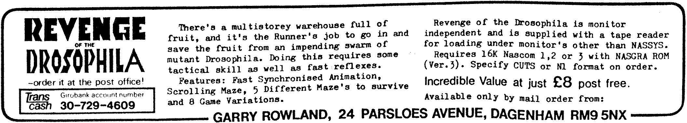

80-Bus News |
November–December 1983 · Volume 2 · Issue 6 |
| Page 14 of 67 |
|---|
As floppy disk technology has developed, more and more data can be stored on each mini-floppy disk. One of the biggest steps was the change from 48 tracks per inch (tpi) to 96 tpi. This was achieved first by Micropolis, who developed a narrower disk head. Other manufacturers such as Teac and Mitsubishi have followed, and the 48 tpi units can be regarded as obsolete, as they offer poorer value for money. Of course the advantage of obsolete items is that it may be possible to get hold of them at a low price, so 48 tpi units are still useful. Incidentally, the IBM Personal Computer at present uses 48 tpi drives!
This article answers the following question:–
“If you have 96 tpi drives, is it possible to process disks from a 48 tpi
system?”
The first problem is to make the 96 tpi drives double step, so that only alternate tracks are processed. This can be done through software in the BIOS, or the drive manufacturer may have incorporated this in the design. For example a switch can be added to the Teac 55F which selects normal or double stepping. I believe the Mitsubishi drives can be sent a command by the disk controller specifying this option. In some cases drives may have this feature but it is undocumented.
If you try this you will find that 96 tpi drives have no trouble reading or rewriting disks from a 48 tpi drive, and I have found that rewritten tracks can be read without difficulty on a 48 tpi drive. This is lucky, as the 48 tpi drive is picking up noise as it is reading a wider track than that written. This works with both single and double density.
However I have also tried formatting disks for 48 tpi use using a 96 tpi drive, and this does not work reliably. The 48 tpi drive has trouble finding sector headers and RNF and CRC errors are likely. I have tried erasing the disk to be formatted using a large magnet, then formatting and writing using a 96 tpi drive. This seemed to considerably improve the ability of a 48 tpi drive to read the disk, because the inter-track noise is reduced.
So the answer is that disks can easily be exchanged between users with 96 and 48 tpi drives, provided that the disks are always formatted by the person with the 48 tpi drives. In emergency the 96 tpi drives can be used for formatting, using the magnet method. If you use a magnet, keep it far away from other disks, disk drives, and televisions or monitors, since all of these can suffer damage from magnetic fields. A bulk eraser would be an alternative to a magnet.
It is beyond the scope of this article to describe how to write a BIOS which can process both 48 and 96 tpi disks. This is left as an exercise for the reader!

| Page 14 of 67 |
|---|